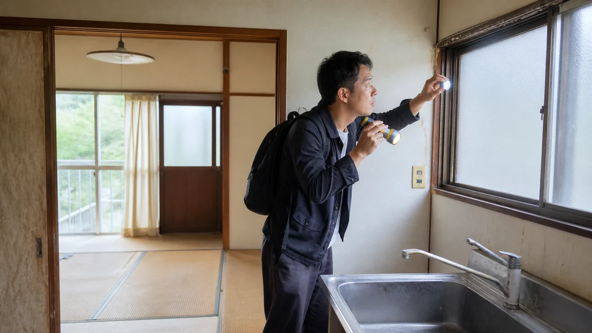

内見前に図面へ確認順を書き込む
短時間でも全室と外回りを漏れなく見る順路を作る。
MITSUKE RENT GUIDE 07
玄関から外構まで順路を決め、動作、寸法、写真、未確認、契約質問へ変換する現地実務記事。

現地内見では、資料が全部そろうのを待つより、確認済み・未確認・専門家へ聞く事項を分けるほうが実務は進みます。この記事は築年数の経った戸建て賃貸を内見し、集合住宅とは違う確認点を知りたい入居希望者に向け、14の論点を現地確認と相談準備の順に整理しました。玄関から外構まで順路を決め、動作、寸法、写真、未確認、契約質問へ変換する現地実務記事。 結論を保証するものではなく、対象物件と契約条件に合わせて確認先を選ぶためのガイドです。
想定している検索時の疑問は、「戸建て賃貸 内見 チェック」「古い一戸建て 賃貸 注意」「賃貸 内見 持ち物」で現地確認方法を知りたい。 以下では広告上の一言で判断せず、記録、比較、相談境界、次の行動を章ごとに示します。
戸建ての内見は、部屋の印象を確かめる見学ではなく、入居後の動作を短時間で試す機会です。玄関から冷蔵庫を運ぶ、子どもを車から降ろす、洗濯物を干す、夜に勝手口を施錠するといった一連の動きを図面へ置くと、広さの数字だけでは見えない不便が分かります。気に入ったという感覚を否定する必要はありませんが、その感覚と、測定・作動・契約上の回答は別の欄へ記録します。
内見前には家族の大型家具と家電を一覧にし、本体寸法、扉を開く余白、搬入に必要な幅を分けてください。車も全長・全幅だけでなく、後席ドアや荷室を開く場面が重要です。現地で測れなかった場所は空欄にせず、何が障害で測れなかったか、図面寸法を確認できるかを質問にします。数字に少し余裕があるかまで見れば、ぎりぎり入ることと毎日安全に使えることを混同しにくくなります。
古い戸建てでは、新築同様かどうかを採点するより、現在の状態が説明され、入居前対応と入居後の連絡先が明確かを見るほうが実務的です。床の感触、建具の固さ、設備の年式、庭の状態を記録しても、原因や寿命は内見者だけでは診断できません。気になる症状を場所・動作・発生条件で伝え、貸主側が確認するのか、現況で引き渡すのか、契約前に回答を得ます。
写真は多さより検索できることが大切です。「一階洗面・写真03」のように部屋名と番号を付け、図面にも同じ番号を置きます。全景、対象の近接、寸法が分かる一枚を組にし、撮影日時を保持してください。近隣宅、表札、私物などが写る場合は撮影を避け、担当者の許可範囲を守ります。家族間で写真を共有する場合も、契約判断に必要な人だけが見られる保存先を選びます。
一度の内見で確認できない項目は必ず残ります。通水できない、電気が止まっている、貸主への照会が必要、別の時間帯に見たい、という理由を付ければ、未確認は失敗ではなく次の作業になります。申込み前に回答が必要なものと、入居前までに確認すればよいものを分け、安全、費用、利用可否に直結する質問から仲介担当へ戻します。回答を得たら、口頭だけでなく設備表や契約書面との整合も見ます。
最終判断では、十四章のすべてを同じ点数で扱いません。自車が安全に入らない、希望家具が搬入できない、重要設備が未確認など、生活を成立させない条件には別の印を付けます。一方、家具配置の変更や道具の準備で対応できる条件は調整可能として残します。家族ごとに負担が違う場合は平均点へ埋めず、誰がどの場面で困るかを書いて相談材料にしてください。
見付で候補を比較するときは、各物件で同じ順路と同じ持ち物を使います。最初の物件だけ細かく測り、後の物件は印象で済ませると公平に比べられません。部屋、設備、外回りの確認票を複製し、確認できた項目には時刻、測定値、写真番号を記します。質問への回答も同じ欄へ入れ、物件ごとに情報量が違う場合は未確認として扱います。
家族が内見へ同行できない場合は、事前にその人の必須条件を三つ聞きます。在宅勤務する人なら机、電源、通信、音、介護や育児がある世帯なら段差、扉幅、車から玄関への動線が中心です。代理で確認する人が自分の価値観へ置き換えず、必要な寸法と動画を持ち帰ることで、帰宅後の相談を具体化できます。
晴天の昼に分かりにくい事項には印を付けます。雨水の流れ、夜間照明、朝夕の交通、風の強さ、季節の落ち葉などは、担当者へ過去の事実として分かる範囲を質問し、可能なら別時刻に外周を再確認します。再訪できない場合も、安全が確認されたと断定せず、判断に残る不確実性として家族で共有します。
内見終了後は、写真を眺める前に、良かった点、生活を妨げる点、回答待ちの点を各三つ書きます。印象が新鮮なうちに記録した後で写真と図面を照合すると、見たつもりの箇所が分かります。申込みを急ぐ場面でも、安全、費用、契約範囲、主要設備の未確認は質問票へ戻し、回答期限を相談してください。
申込判断へ進む前に、広告へ書かれた内容と内見で確認した現況をもう一度照合します。設備の有無、駐車台数、庭や物置の利用範囲、入居前修繕の予定が異なる場合は、どちらが最終条件になるかを質問してください。担当者の回答には日付を添え、契約書や設備表へ反映される項目を区別します。家族の希望を満たすかだけでなく、毎日の動作が安全に続けられるか、未確認事項を受け入れられるかを話し合います。内見票の完了は空欄がゼロになることではなく、確認できなかった理由と次の確認先がすべて分かることです。再訪、資料照会、条件調整のどれが必要かを決め、重要な回答が得られるまで判断を保留する項目を明示してください。
確認票には、合格・不合格だけでなく「この条件なら使える」という前提も書きます。たとえば駐車は軽自動車なら可能、収納は棚を追加しない条件なら足りる、通信は希望回線の提供確認後に判断する、といった形です。条件付きの評価を残すことで、申込後に前提が消えても気付きやすくなります。最後に家族が譲れない条件と調整できる条件を読み上げ、回答待ちの事項を担当者へ一つの文書で送ります。
内見票を担当者へ送るときは、「気になる」「狭い」といった感想を、回答できる質問へ変えます。駐車なら対象車種と不足しそうな余白、水回りなら試せなかった操作、庭なら管理範囲を示します。回答が写真、図面、設備表のどれに基づくかも確認し、別の物件の説明が混ざらないよう物件名と所在地を各ページへ記載してください。
再内見では最初から全項目を繰り返さず、前回の未確認、回答と現況の照合、時間帯で変わる環境に集中します。修繕後の確認なら、対象箇所の動作と写真を更新し、古い写真も残します。二回の記録がそろったら、変更された条件が予算や生活動線へ及ぼす影響を採点表へ戻し、申込判断を更新します。
候補を断る場合も、確認票は次の内見に役立ちます。どの寸法、設備条件、生活動線が合わなかったかを残し、次の検索条件へ具体的に反映します。「古かった」「何となく狭かった」で終えると同じ不一致を繰り返します。反対に、条件を満たした物件では、その根拠となる写真、寸法、担当者回答を申込書類と一緒に保存します。比較に使った資料の作成日をそろえ、募集条件が更新された場合は古い判断を見直してください。十四章の記録が、見る順序、質問、比較、申込判断までつながっていれば、内見チェックは完了です。
短時間でも全室と外回りを漏れなく見る順路を作る。
幅、奥行、高さ、切返し、乗降余地を確認する。
数、位置、容量の表示、回線引込を家具配置と照合する。
道路音、におい、視線、日当たりを室内外で確認する。
確認の中心：短時間でも全室と外回りを漏れなく見る順路を作る。 図面の玄関に開始印を付け、水回り、各居室、収納、庭、駐車場へ進む線を引きます。二階や勝手口を後回しにすると見落としやすいため、戻りの経路まで書き、各場所に質問番号を振ってください。
具体例：玄関・水回り・居室・庭・駐車の順を決める。 家族で役割を分け、一人は動作、一人は寸法、一人は記録を担当すると短時間でも確認が重複しません。
注意：図面と現況が一致するとは限らない。
次の一歩：赤ペンで質問箇所を囲む。 内見後は図面の全番号に、確認済み・質問中・再訪希望のいずれかを付けます。
確認の中心：巻尺、スマホ、ライト、筆記具、家具寸法を準備する。 巻尺は家具だけでなく廊下幅や駐車余白にも使い、ライトは収納奥や床下点検口の周辺を照らす用途にします。スマホには家具家電の寸法表を入れ、筆記具は濡れても読めるものを用意します。
具体例：冷蔵庫と洗濯機の寸法表を持参する。 冷蔵庫は本体幅に放熱余白と扉の開き幅を加え、洗濯機は防水パン、蛇口高さ、搬入経路を別々に測ります。
注意：許可なく収納内部や私物を撮影しない。
次の一歩：撮影可否を冒頭で確認する。 撮影前に許可を取り、撮れない箇所は図面へ文章で状態を残してください。
確認の中心：進入、段差、門、郵便受け、夜間照明を確認する。 道路から門、玄関までを普段の荷物を持つ速度で歩き、段差、勾配、雨水の流れ、夜間照明の位置を見ます。ベビーカーや自転車を使う世帯は、方向転換できる幅と置場まで一続きで確認します。
具体例：雨の日に滑りそうな飛石を生活動線で見る。 飛石やタイルは乾いた日の見た目だけでなく、雨天時に滑りやすそうな勾配や苔の位置を写真へ残します。
注意：内見時の好天だけで雨天安全を断定しない。
次の一歩：懸念箇所を足元入りで撮る。 玄関までの動線で気になった箇所は、補修予定と入居時の状態記録の扱いを尋ねます。
確認の中心：幅、奥行、高さ、切返し、乗降余地を確認する。 駐車枠の幅だけでなく、道路から入る角度、切返し回数、塀や電柱、後席の乗降余地を測ります。縦列なら毎朝どちらの車が先に出るか、来客や自転車がある日も想定してください。
具体例：チャイルドシート側の扉が塀に当たる例を検討する。 チャイルドシート側は扉を大きく開くため、塀との距離を実車寸法に扉の張出し分を足して比べます。
注意：「二台可」の表示だけで自車適合を決めない。
次の一歩：車種寸法を担当者へ伝える。 車検証の寸法と測定写真を担当者へ示し、利用できる区画を図面で確認します。
確認の中心：施錠、建付け、網戸、雨戸、隙間を一か所ずつ見る。 玄関、勝手口、各窓を一か所ずつ開閉し、鍵の回り方、建付け、網戸の外れ、雨戸の動きを見ます。固い箇所は何度も力を加えず、どの操作で止まるかを担当者へ見てもらいます。
具体例：勝手口だけ鍵が固い場合を記録する。 勝手口だけ鍵が固いなら、鍵、扉枠、湿気など原因を決めつけず、症状と入居前対応の可否を記録します。
注意：力任せに動かして破損させない。
次の一歩：不具合は入居前対応可否を質問する。 鍵の本数と交換予定も設備確認表へ加え、引渡し時に照合してください。
確認の中心：沈み、傾き感、染み、ひび、臭気を部屋別に記録する。 床の沈みや傾き感、壁のひび、天井の染み、室内の臭気を部屋名と位置で記録します。二階の窓下と一階天井など上下の位置関係を図面で結びますが、原因診断は行いません。
具体例：二階窓下と一階天井染みを図面上で対応させる。 染みは全景と近接の二枚を同じ番号で撮り、大きさが分かるよう巻尺を添えます。
注意：目視だけで構造や雨漏り原因を判断しない。
次の一歩：場所と大きさが分かる写真を残す。 安全や雨漏りが疑われる場合は、契約前に建物側の確認予定と回答方法を尋ねます。
確認の中心：給排水、換気、収納、洗濯機パン、給湯操作を確認する。 台所、洗面、浴室、洗濯機置場は、蛇口、排水、換気扇、収納、給湯操作を分けて見ます。通水できない場合は正常と扱わず、いつ誰が試運転し、結果をどう知らせるかを確認します。
具体例：ドラム式洗濯機の扉が開くか測る。 ドラム式洗濯機は防水パン寸法に加え、前面扉、給水栓、排水ホース、搬入廊下の条件を測ります。
注意：通水不可なら未確認として契約前対応を聞く。
次の一歩：設備ごとに確認済み・未確認を分ける。 設備ごとに確認済みと未確認を分け、未確認のまま申込む場合の対応を書面で残します。
確認の中心：数、位置、容量の表示、回線引込を家具配置と照合する。 コンセントは数だけでなく、家具を置いた後に使える位置かを見ます。在宅勤務、調理、暖房など同時使用の場面を想定し、分電盤の表示や通信回線の引込位置も確認します。
具体例：在宅勤務机の位置にコンセントがない例を考える。 机の予定位置に電源がなければ、延長コード前提の安全性と動線を検討し、別の配置も図面へ描きます。
注意：通信速度や利用可否を内見だけで保証しない。
次の一歩：希望事業者へ住所で確認する。 回線の提供可否や速度は内見で断定せず、希望事業者へ正確な住所で照会します。
確認の中心：型番、設置年、設備か残置物か、故障時を確認する。 エアコンと給湯器は型番、製造年表示、設置場所を撮り、設備表で「設備」か「残置物」かを照合します。故障時の連絡先と、修理中に生活へ出る影響も質問してください。
具体例：古い二階エアコンだけ残置物の例を比較する。 二階だけ残置物なら、故障時に貸主修繕の対象外となる可能性を確認し、交換費用や撤去条件も尋ねます。
注意：作動音だけで寿命を判断しない。
次の一歩：設備表へ回答を書き込む。 回答は機器番号と対応させ、入居前の試運転結果を設備表へ追記します。
確認の中心：押入、階段、廊下、扉幅と家具搬入を確認する。 収納の容積より、玄関から廊下、階段、部屋入口まで大型家具が通るかを測ります。曲がり階段は最狭部、天井高さ、手すりの張出しを記録し、建具を外す前提にしません。
具体例：ベッドマットが曲がり階段を通るか測る。 ベッドマットは曲げられる種類かを確認し、搬入業者へ経路写真と寸法を事前共有します。
注意：家具搬入のための建具外しを当然としない。
次の一歩：大型家具寸法を図面へ記す。 入らない家具は処分や買替えも含め、申込前に配置計画を修正します。
確認の中心：使える区域、手入れ、散水、物置鍵を確認する。 庭、物置、通路は賃貸対象範囲を図面で示してもらい、貸主保管品、散水設備、物置鍵、草木管理の分担を確認します。境界標らしき物を見ても借主だけで境界を確定しません。
具体例：貸主保管品が物置一角に残る例を扱う。 物置の一角に保管品が残るなら、使用できる棚と立入不可部分を写真付きで分けます。
注意：境界を目測で確定しない。
次の一歩：賃貸対象範囲を図示してもらう。 庭の利用希望と管理負担を質問票へまとめ、契約書の対象範囲と照合します。
確認の中心：道路音、におい、視線、日当たりを室内外で確認する。 室内では窓を閉めた状態と開けた状態を比べ、道路音、におい、視線、日当たりを時刻と部屋名で記録します。短い滞在で年間環境を決めず、気になる条件は曜日や時間を変えて再訪します。
具体例：窓を閉めた時と開けた時の音差を比べる。 窓を開けた時だけ聞こえる音は、発生方向、継続時間、生活への影響を記し、感情的な評価語を避けます。
注意：短時間の印象を恒常的環境と断定しない。
次の一歩：時間帯を変え再訪できるか相談する。 再訪が難しければ、担当者へ分かる範囲の事実と季節的な変化を質問します。
確認の中心：既存傷、不具合、設備、鍵を場所名付きで保存する。 写真は既存傷、不具合、設備、鍵を場所名と番号付きで保存し、全景と近接を組にします。個人情報や近隣宅を写さず、共有先と保管期間も決めてください。
具体例：床傷へ付箋番号を置き一覧化する。 床傷には番号札と巻尺を添え、図面の同じ番号へ位置と向きを書くと退去時にも比較できます。
注意：個人情報や近隣宅を不用意に写さない。
次の一歩：申込後に双方確認用の記録方法を聞く。 申込後は、入居前状態を貸主側と共有する期限と提出方法を確認します。
確認の中心：不明点を重要度と回答期限で整理する。 内見後の不明点を安全、契約条件、費用、生活上の不便に分け、重要度と回答期限を付けます。未確認を「たぶん大丈夫」と補わず、回答が申込判断に必要かを家族で決めます。
具体例：給湯試運転、庭分担、駐車寸法が残る例を示す。 給湯試運転、庭の分担、駐車寸法が残るなら、対象箇所と求める回答を一件ずつ質問票へ書きます。
注意：未確認を自分に都合よく推測しない。
次の一歩：質問票を添えて賃貸相談する。 回答と根拠資料がそろった項目から完了印を付け、残りを添えて賃貸相談へ進みます。
現地内見の準備状況を確認するため、完了・未完了だけでなく根拠資料の場所も記してください。
契約状況や安全管理により異なるため担当者の許可を得る。使えなければ未確認として記録する。 水回りは寸法と換気を確認するの確認結果を添えると、一般論と対象物件の事情を分けて相談できます。分からない欄を無理に埋める必要はありません。
貸主の私物や個人情報がある場合もあり、最初に許可と範囲を確認する。 収納は量より搬入動線を見るの確認結果を添えると、一般論と対象物件の事情を分けて相談できます。分からない欄を無理に埋める必要はありません。
場所と感じ方を記録し、原因を断定せず担当者や必要な専門家へ確認する。 写真を入居前状態の資料にするの確認結果を添えると、一般論と対象物件の事情を分けて相談できます。分からない欄を無理に埋める必要はありません。
故障時の扱いなど契約上の位置付けに関わるため設備表と契約書で個別確認する。 持ち物は測る・照らす・記録するの確認結果を添えると、一般論と対象物件の事情を分けて相談できます。分からない欄を無理に埋める必要はありません。
重要な未確認があれば回答や再内見を相談し、期限と優先度を踏まえて判断する。 玄関・鍵・窓の開閉を確かめるの確認結果を添えると、一般論と対象物件の事情を分けて相談できます。分からない欄を無理に埋める必要はありません。
制度や手続は更新されるため、公開元の最新情報と対象範囲を確認してください。リンク先の説明は個別物件への判断を代替しません。
本記事は2026年8月時点の一般的な情報整理と相談準備を目的としています。対象物件の安全性、適法性、契約条件、税務上の取扱い、修繕の必要性を診断・保証するものではありません。法務は弁護士・司法書士、税務は税務署・税理士、建物の安全や工事は建築士・施工業者、行政制度は担当窓口へ個別に確認してください。富士ヶ丘サービス株式会社は宅地建物取引業者として、戸建て賃貸の現況整理、募集条件、管理方法、売却を含む選択肢の相談を承ります。